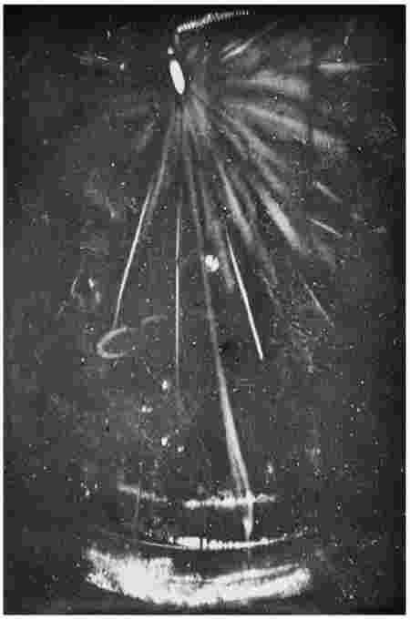
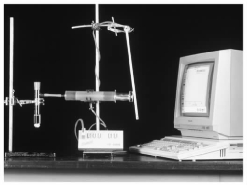

在哲学上被称为实在论 和观念论 的两种对立的思想流派之间一直存在着亘古的争论。实在论认为物理世界是独立于人的思维和感知而存在的。观念论否认这一点，认为物理世界以某种方式依赖于人的意识活动。对大多数人来说，实在论看似比观念论更为合理，因为实在论很好地契合了人们的常识看法，这种看法认为关于世界的事实是“在那里”等待着我们去发现的，而观念论却不以为然。的确，乍一看观念论好像相当可笑：既然人类消亡之后石头和树木大概仍将继续存在，在什么意义上能说它们的存在依赖于人的心智呢？事实上，实在论和观念论的争论要比这复杂得多，今天的哲学家们仍在继续讨论着。
传统的实在论/观念论论题属于一种被称为形而上学的哲学领域，但实际上这一论题和科学之间并没有任何特别的关系。本章我们所关注的是一种更为现代的争论，它与科学特别相关并且在某些方面类似于传统的论题。这一争论发生在一种被称为科学实在论 的立场及其对立面反实在论 或工具论 的立场之间。从现在开始，我们将使用“实在论”一词指称科学实在论，用“实在论者”指称科学实在论者。
科学实在论与反实在论
像大多数哲学“主义”一样，科学实在论 [1] 是以不同的版本出现的，我们很难用一种完全精确的方法对其加以定义。但其基本观点却是显明的。实在论者认为科学的目的就在于为世界提供一种正确描述。这听起来像是一种无关紧要的学说，因为当然没有人会认为科学意在提出一种关于世界的错误描述。但是，这却不是反实在论者所思考的。相反，反实在论者认为科学的目的在于对世界的某个特定的部分 ——“可观察”的部分——提供一种正确描述。至于世界“不可观察”的部分，按照反实在论者的观点，科学所描述的是真是假都无关紧要。
对于世界的可观察部分，反实在论者确切指称的是什么呢？他们指称桌子、椅子、树木和动物、试管和本生灯、雷雨和下雪等等的日常世界，诸如此类的事物都是可以被人们直接感知的——这也就是我们称之为可观察的意思。科学的一些分支就是专门处理可观察对象的，古生物学，或者说对化石的研究，就是一个例子。化石是容易观察到的——任何具有正常视力的人都能够看到它们。但是，其他的一些科学分支却是探究不可观察的实在领域的，物理学就是一个明显的例子。物理学家们不断提出关于原子、电子、夸克、轻子以及其他奇异粒子的理论，所有这些粒子在常规世界中都不能被观察到。这种类型的实体已经超出了人类观察能力的可及范围。
关于古生物学之类的科学，实在论和反实在论之间并没有意见分歧。就化石的研究而言，因为化石是可观察的，实在论者关于科学意在真实地描述世界的论题和反实在论者关于科学意在真实地描述可观察世界的论题显然是一致的。但是涉及到物理学一类的科学时，实在论和反实在论就出现了分歧。实在论者认为，当物理学家提出关于电子和夸克的理论时，他们是在试图提供对于亚原子世界的真实描述，就像古生物学家试图提供对于化石世界的真实描述一样。反实在论者不同意这种观点，他们在亚原子物理学和古生物学理论之间看到了一种根本的区别。
当反实在论者们谈论不可观察的实体时，他们会认为物理学家正在 研究什么呢？通常，他们会认为这些实体仅仅是顺手虚构的，是物理学家们为了预测可观察的现象而提出的。例如，来看一下气体动力学理论，这一理论认为任何体积的气体都包含了大量处于运动中的微小实体。这些实体——分子——是不可观察的。通过动力学理论，我们能够推知关于气体可观察行为的各种结论。例如，如果气压保持不变，加热标本气体就会导致气体膨胀，这一点可以通过实验证实。按照反实在论者的观点，在气体动力学理论中假定不可观察实体的唯一目的就是推出这类结论。气体是否的确 包含了运动的分子，这一点并不重要；动力学理论的要义不在于真实描述隐藏的事实，而在于提供一种预测观察数据的方便途径。我们可以看出为什么反实在论有时被称为“工具论”——它认为科学理论是有助于我们预测观察数据的工具，而不是描述实在之潜在本质的努力。
由于实在论/反实在论的争论涉及到科学的目标，人们可能会认为这一争论仅仅靠询问科学家本人就可以得到解决。为什么不在科学家当中做一个民意测验问问他们自己的目标呢？然而这一建议并未切中要义——它过于从字面来理解“科学的目标”一词。当我们问什么是科学的目标时，并不是要问各个科学家的目标。确切地说，我们是要问如何最好地弄清科学家所说的和所做的——如何解释科学事业。实在论者认为我们应该将所有的科学理论解释为对实在的尝试性描述；反实在论者认为这一解释对于谈论不可观察的实体和过程的理论来说是不恰当的。揭示出科学家们自己对实在论/反实在论之争的看法肯定是一件有趣的事，然而，这一问题终究还是一个哲学问题。
反实在论的许多动机都来源于如下信念：我们实际上不能获得关于实在的不可观察部分的知识——这种知识超出了人类的知识视域。按照这一观点，科学知识的界限是由我们的观察能力设定的。所以，科学能够给予我们关于化石、树木、冰糖的知识，但是不能给予我们关于原子、电子和夸克的知识——后者都是不可观察的。这一观点并非完全不合情理。没有人会真正怀疑化石和树木的存在，但是却可能去怀疑原子和电子的存在。正如我们在本书最后一章将要看到的，19世纪后期的许多重要科学家都怀疑原子的存在。如果科学知识限于可被观察的范围内，那么所有接受这一观点的人，显然都必须解释为什 么 科学家会提出关于不可观察的实体的理论。反实在论者给出的解释是，这些理论都是顺手虚构的，是为了预测事物在可观察世界中的表现而提出的。
实在论者不认为科学知识受限于我们的观察能力。相反，他们认为我们已经切实了解了不可观察的实在，因为存在着种种理由认为我们最好的科学理论都是正确的，而最好的科学理论都在探讨不可观察的实体。例如，来看一下物质的原子论，这一理论声称所有的物质都是由原子构成的。原子论能够解释有关世界的大量事实。按照实在论者的说法，这是表明这一理论正确的很好的证据，也就是说，物质的确是由如这一理论所描述的以某种方式表现的原子构成的。尽管存在着支持该理论的明显证据，该理论当然可能 仍是错误的，但所有的理论都可能是这样。仅仅因为原子不可观察，还没有理由不将原子论解释成一种对实在的尝试性描述——多半是一种成功的描述。
严格来说我们应该区分两种反实在论。根据第一种反实在论，根本不能从字面上去理解对不可观察实体的讨论。因此，（例如）当一位科学家提出一种关于电子的理论时，我们不应该认为他是在宣称被称为“电子”的那种实体的存在。相反，他谈论电子是比喻性的。这种反实在论在20世纪上半叶非常流行，但是现在已经很少有人提倡了。它主要是受到语言哲学中的一种学说的推动。按照这种学说，对原则上不可观察的事物作出有意义的断言是不可能的——当代很少有哲学家还接受这一学说。第二种形式的反实在论承认，关于不可观察的实体的探讨应该从字面来理解：如果一个理论认为电子带负电荷，当电子存在并且带负电荷时这一理论为真，反之为假。但是反实在论者声称，我们将不会知道到底是哪一种情形。因此，对待科学家关于不可观察的实在所提出的主张，正确的态度应该是一种彻底的不可知论。这些主张要么正确要么错误，但是我们不能辨别其正误。现代的大多数反实在论都属于第二种形式。
“无奇迹”说
许多假设不可观察实体存在的理论在经验上是成功 的 ——它们对可观察世界中物体的表现作出了准确的预测。上面提到的气体动力学理论就是一个例子，还有许多这样的例子。此外，这类理论通常还具有重要的技术用途。例如，激光技术所依据理论的基础，就与一个原子中的电子从高能状态转变为低能状态过程中发生的情况相关。激光技术不断发挥作用——使我们能够矫正视力、用导弹袭击敌人，以及做其他很多事。因此奠定激光技术之基础的理论在经验上是高度成功的。
假设不可观察实体存在的那些理论在经验上的成功，是支持科学实在论的一种最有力的论点，被称为“无奇迹”说。按照这种说法，如果一个探讨电子和原子的理论精确预测了可观察的世界，那么，除非实际上电子和原子真的存在，否则这一理论就将是一种罕见的巧合。如果不存在原子和电子，怎么解释理论与观察数据的紧密相符？类似地，除非假设相关理论是正确的，我们又该怎样去解释理论推动了技术的进步？如果正如反实在论者所言，原子和电子仅仅是“顺手虚构的”，为什么激光能有效地发挥作用？按照这一观点，成为一个反实在论者就等于相信奇迹。既然在存在非奇迹的替代情形时显然最好不要相信奇迹，我们就应该成为实在论者而不是反实在论者。
“无奇迹”说并不是想证明 实在论是正确的而反实在论是错误的。确切地说，它是一个合理性论点——一种最佳解释推论。待解释的现象是这样一种事实，即许多假设不可观察实体存在的理论在经验上高度成功。“无奇迹”说的倡导者们声称，对于这一事实的最佳解释就是这些理论是正确的——相关的实体的确存在，正如理论所说的那样以某种方式表现出来。除非接受这种解释，否则我们的理论在经验上的成功就仍是一个无法解释的谜团。
反实在论者用不同的方式回应“无奇迹”说。其中一种回应诉诸关于科学史的某些事实。在历史上有许多理论，我们现在认为那些理论是错误的而在当时它们在经验上却相当成功。在一篇著名的文章中，美国科学哲学家拉里·劳丹从不同科学门类和科学时期中抽取、列举了不下30种这类理论。燃烧的燃素说就是一个例子。这一理论直到18世纪末还广泛流行，它主张任何物体燃烧时都会释放一种叫做“燃素”的物质进入空气中。现代化学告诉我们这一理论是错误的：不存在类似燃素的物质。相反，燃烧发生于物体在空气中与氧气发生化学反应时。尽管燃素是不存在的，燃素说在经验上却相当成功：它非常恰当地符合当时能获取的观察数据。
这类例子表明，支持科学实在论的“无奇迹”说有些操之过急。“无奇迹”说的支持者们将当今科学理论的经验性成功看做是证明了这些理论的正确性。但是科学史表明，在经验上成功的理论通常被证明是错误的。所以我们如何知道同样的命运不会降临今天的理论？例如，我们如何知道物质的原子论不会和燃素说一样？反实在论者声称，一旦对科学史投入应有的关注，我们就能看到从经验性成功到理论正确性的推导是不可靠的。因此，对待原子论的理性态度应是一种不可知论——它可能正确，也可能不正确。反实在论者说，我们反正无从得知。
这是对“无奇迹”说的一个强有力的反击，但不是决定性的一击。一些实在论者通过稍微修正这一说法来加以回应。按照改进后的说法，一种理论的经验性成功证明的是：理论就不可观察的世界所述的内容是近似为真，而不是准确地为真。这一弱化的陈述更容易抵御来自科学史上反例的攻击。同时它也更为温和：它允许实在论者承认今天的理论在某个细枝末节上可能不正确，但仍坚称今天的理论大致是正确的。另一种修正“无奇迹”说的方法是改进经验成功这一概念。一些实在论者认为，经验成功不仅仅是与已知的观察数据相符的问题，它还能使我们去预测新的尚属未知的观察数据。与经验成功的这一更严格的标准相比较，找出在经验上成功、后来却被证实为错误的史例就更不容易了。
尚不确定这些改进能否真的挽救“无奇迹”说。它们当然减少了历史上的反例数量，却没有完全消除。仍旧存在的一个反例是1690年首次由克里斯蒂安·惠更斯提出的光的波动理论。按照这一理论，光是由“以太”这种不可见的介质中的波状振动构成的，而以太被认为充满着整个宇宙。（波动说的竞争理论是牛顿支持的光的微粒说，微粒说坚持光是由光源放出的极小微粒构成的。）直到法国物理学家奥古斯丁·菲涅耳在1815年用公式表示了光的波动理论的数学形式，并将其用以预测一些令人惊奇的新光学现象，这一理论才被广为接受。光学实验证实了菲涅耳的预测，并且使许多19世纪的科学家相信光的波动理论是正确的。然而，现代物理学又告诉我们这一理论并不正确：并不存在类似以太这样的物质，所以光并不是由以太中的振动组成。我们再次碰到一个错误的但在经验上成功的理论。
这一例子的重要特征是，即使是改进后的“无奇迹”说，同样可以被推翻。菲涅耳的理论的确 作出了新颖的预测，所以即使就经验成功的更为严格的标准来说，它也有资格被认为是经验上成功的。而且很难理解，既然菲涅耳的理论建基于并不存在的以太概念之上，它如何能被称做“近似为真”。无论声称一个理论近似为真的确切所指是什么，一个必然条件一定是这一理论所谈论的实体的确存在着。简言之，即使按照一种严格的对经验成功概念的理解，菲涅耳的理论在经验上也是成功的，但却不是近似为真的。反实在论者说，这一例子的寓意是我们不应该仅仅因为现代科学理论在经验上如此成功就假设它们大致正确。
因而，“无奇迹”说对于科学实在论来说是否是一个好的论点，这一点尚不确定。一方面，正如我们看到的，这一论点面临着相当严肃的反对意见。另一方面，关于这一论点也存在着一些在直觉上引人注目的东西。当人们考虑到那些假设了原子、电子等实体存在的理论令人惊异的成功时，就很难接受原子和电子不存在。但是正如科学史所表明的，无论当今的科学理论如何与观察数据相符，我们都应该对认为这类理论正确的假设持谨慎态度。过去许多人都曾作过上述假设，却被证明是错误的。
可观察/不可观察的区分
实在论和反实在论之争的核心是可观察事物和不可观察事物之间的区分。到目前为止，我们只是认为这一区分是当然的——桌子和椅子是可观察的，而原子和电子是不可观察的。然而，这种区分在哲学上其实是有问题的。事实上，科学实在论的一种主要观点认为，以一种原则性的方式在可观察/不可观察之间作出区分是不可能的。
为什么这一观点出自科学实在论？因为反实在论的一致性主要依赖于可观察和不可观察之间的明显区别。回想一下：反实在论者倡导对科学主张持不同的态度，视这些科学主张是关于实在的可观察部分还是不可观察部分而定——我们仍应对后者而非前者的正确性持不可知论的态度。反实在论由此预设我们能够将科学主张分为两类：关于可观察实体、过程的科学和关于不可观察实体、过程的科学。如果事实是不能用必要的方式作出这种分类，反实在论显然会陷入严重的困境之中，实在论不战而胜。为什么科学实在论者通常热衷于强调与可观察/不可观察区分相关的问题？原因就在这里。
这类问题中有一个涉及到观察和检测之间的关系。类似于电子这样的实体显然在常规意义上是不可观察的，但是它们的存在可以通过被称为粒子检测器的特殊仪器来检测到。最简单的粒子检测器是云室，它由一个充满着空气和饱和蒸汽的密闭容器构成（参见图9）。当带电粒子（如电子）穿过云室时，它们就会与空气中的中子相碰撞，将中子转化为离子；水蒸汽在这些可以导致液滴形成的离子周围凝结，这一切可以通过肉眼看到。我们可以通过观察这些液滴的轨迹来追踪电子在云室中的路径。这是否意味着电子终究能被观察到？大多数哲学家会说不：云室能使我们检测到电子，但不是直接观察到它们。这就如同，高速喷气式飞机可以通过其蒸汽留下的轨迹被检测到，但观察到轨迹并不等于观察到飞机本身。然而，观察和检测之间的区分通常很明显吗？如果不是，反实在论者的立场就陷入困境之中。
在20世纪60年代对科学实在论的一个著名辩护中，美国哲学家格罗弗·马克斯韦尔针对反实在论者提出以下问题。考虑一下下述事件的顺序：用肉眼看某些东西，透过窗子看某些东西，借助一副高度数眼镜看某些东西，借助双筒望远镜看某些东西，借助一个低倍显微镜看某些东西，借助一个高倍显微镜看某些东西，等等。马克斯韦尔认为，这些事件取决于一个平稳的连续体。那么，我们如何来决定哪些行为是观察，哪些不是？生物学家能够借助高倍显微镜来观察微生物吗？或者说，他只能用与物理学家在云室中检测电子存在一样的方法来检测微生物的存在吗？如果某些东西仅仅在借助精密科学仪器的情况下才能被看到，它们应被视为可观察的还是不可观察的？在我们拥有检测的例子而不是观察的例子之前，仪器制造能达到何种精密程度呢？马克斯韦尔认为，没有一种原则性的方法来回答这些问题，所以反实在论者将实体分为可观察的和不可观察的这种尝试注定要失败。

图9 第一组照片中的一张显示了亚原子粒子在云室中的轨迹。1911年，英国物理学家、云室的发明者C.T.R.威尔森在剑桥的卡文迪什实验室拍下这张照片。嵌入在云室中的金属舌片顶部的少量镭放射的琢粒子产生了这一轨迹。带电荷的粒子在云室中沿着蒸汽移动，使气体电离；水滴凝结在离子上，从而产生粒子经过了的液滴的轨迹。
马克斯韦尔的论证得到如下事实的支持：科学家们自己有时借助于精密的仪器来谈论“观察”粒子。在哲学文献中，电子通常被认为是不可观察实体的范例，但是科学家们却常常津津乐道于通过粒子检测器来“观察”电子。当然，这一点并不能证明哲学家们错了以及电子终究是可观察的，因为科学家的谈论可能最好被理解为“说说罢了（facon-de-parler）”。类似地，正如我们在第二章中看到的，科学家谈论一种理论具有“实验证据”也不意味着实验就真的能证明该理论是正确的。然而，如果正如反实在论者所言，真的存在着一种哲学上重要的可观察/不可观察的区分，很奇怪它竟与科学家自身说话的方式如此背离。
马克斯韦尔的论证是有力的，但决不是完全决定性的。当代一位重要的反实在论者范·弗拉森认为，马克斯韦尔的观点仅仅表明“可观察的”是一个模糊概念。模糊概念是指它有处于边界线上的情形——不能清晰地归入或不归入其中的情形。“秃子”就是一个明显的例子。因为掉头发是渐渐发生的，很难说许多人到底是不是秃子。但是范·弗拉森却指出，模糊概念完全可用，并且能够表明世界上的真正差别。（实际上，大多数概念至少在某种程度上都是模糊的。）没有人会仅仅因为“秃子”这个词是模糊的，就坚持认为秃子和有头发的人之间的区别是非实在的或不重要的。可以肯定的是，如果我们试图在秃子和有头发的人之间划出一个明显的界线，这种界线会有任意的成分。但是，因为存在着秃子和不是秃子的清晰的例子，无法划出这种明显的界线就是无关紧要的。尽管概念存在着模糊性，但它却可以很好地使用。
按照范·弗拉森的观点，同样的情况也完全适用于“可观察的”。明显存在着能观察到的实体的例子，例如椅子；也明显存在不能观察到的实体的例子，例如电子。马克斯韦尔的观点强调存在着处于边界线上的情形的事实，其中我们不能确定相关的实体是否能被观察到或仅被检测到。所以，如果我们试图在可观察和不可观察的实体间划出明确的界线，这一界线就不可避免地会有些武断。但是正如秃子的例子一样，无论如何它并不表明可观察/不可观察的区分是不真实或不重要的，因为在可观察/不可观察两边都存在着清晰的例子。所以范·弗拉森认为，“可观察”一词的模糊性对于反实在论者来说并不是什么麻烦。它仅仅是对准确性设定了一个上限，反实在论者能借助这一上限来陈述立场。
这一观点有多少说服力？范·弗拉森认为边界情形的存在以及随之产生的无法客观地划出明显界限的结果，并不能表明可观察/不可观察的区分是非实在的，这一观点当然是正确的。就这一点来说，范·弗拉森的观点成功反驳了马克斯韦尔。然而，表明在可观察和不可观察的实体间存在着真正的区分是一回事，表明这种区分能够担当反实在论者希望负载其上的哲学任务又是另一回事。回想一下反实在论者倡导对关于实在之不可观察部分的论述持完全不可知论的态度——他们说，我们无法知道这些论述是真还是假。即使我们承认范·弗拉森的观点是对的，即存在着关于不可观察实体的明显例子，并且这一观点也足以使反实在论者继续论证其立场，反实在论者仍然需要为如下想法提供理由：关于不可观察实在的认知是不可能的。
不充分论证说
有一种支持反实在论的观点主要关注科学家的观察数据与他们的理论主张之间的关系。反实在论者强调，科学理论所要符合的最终数据在特性上总是可观察的。（许多实在论者都会同意这一论断。）为了表明这一点，我们再来思考一下气体的动力学理论，它声称任何气体都是由处于运动中的分子构成的。因为这些分子都是不可观察的，显然我们不能通过直接观察各种气体标本来检验这一理论。相反，我们需要从理论中推导出一些能被检验的陈述，这些陈述总是关于可观察实体的。正如我们所见，动力学理论暗含了如果气压保持不变，气体受热就会膨胀。通过在实验室里观察相关仪器的读数我们可以直接检验这一陈述（见图10）。这一例子解释了一个普遍的事实：观察数据构成了关于不可观察实体的论断的最终证据。

图10 测量气体体积随着温度改变而变化的膨胀仪。
反实在论者于是认为观察数据“未充分论证”科学家们在此数据基础上提出的理论。这是什么意思呢？它意味着观察数据原则上能够由许多不同的、相互不兼容的理论加以解释。在动力学理论的例子中反实在论将会声称，这种观察数据的一种 可能的解释是，正如动力学理论所述的那样，气体包含着大量处于运动中的分子。但是他们也认为，还存在着其他可能的解释，这些解释与动力学理论相冲突。所以按照反实在论者的观点，假设存在着不可观察实体的科学理论是由观察数据不充分论证的——总是存在着大量同样能够很好地解释观察数据的竞争理论。
很容易就能理解，为什么不充分论证说支持反实在论的科学观。因为，如果理论总是由观察数据不充分论证的，我们如何能有理由相信某个特定的理论是正确的？假设一位科学家支持某种关于不可观察实体的既有理论，理由是这一理论能够解释大量观察数据。反实在论的科学哲学家走上前来，宣称观察数据实际上能被各种替代理论所解释。如果反实在论者是正确的，那么就将得出科学家对于其理论的信心放错了地方。因为什么原因科学家要选择她所选的理论，而不是选择另一种理论呢？在这样一种情形中，科学家真的应该承认她自己也不知道哪种理论正确吗？不充分论证自然导致反实在论的结论，即不可知论是面对关于不可观察的实在领域的主张时所应持的正确态度。
但是，是否真如反实在论者所断言的，一组特定的观察数据总是能被许多不同的理论加以解释？实在论者通常认为这一论断仅仅在琐碎和无趣的意义上才是正确的，借此来回应不充分论证说。从原则上说，对于某组特定的观察数据总是存在着不止一种可能的解释。但是实在论者认为，这并不能得出所有这些可能的解释都一样好。两个理论都能解释我们的观察数据并不意谓着在它们之间就无法选择。比如，一种理论可能就比另一种更简单，或者它用一种在直觉上更合理的方式来解释数据，或者它可能假设了更少的隐性原因，等等。一旦我们承认，除了与观察数据的兼容性外还存在着别的理论选择的标准，不充分论证问题就会消失。并不是所有对观察数据的可能解释彼此都是一样好的。即使动力学理论所解释的数据原则上能由其他替代理论来解释，也不能得出这些替代理论就能和动力学理论解释得一样好。
这种对不充分论证说的回应得到了以下事实的支持：科学史上很少有不充分论证的真实情形。如果正如反实在论者所言，观察数据总是能被许多不同的理论同样好地加以解释，我们就真的会看到科学家们处在永远地相互争论之中吗？这并不是我们见到的实际情形。事实上，当我们察看历史记载时，情况几乎和不充分论证说使我们期望的正好相反。科学家们远非面对大量对于其观察数据的可能解释，他们通常甚至难以找到一种 与数据充分符合的理论。这就支持了实在论者的观点，即不充分论证说仅仅是一种哲学家的担忧，它与实际的科学实践没有多大关系。
反实在论者不可能受这一回应的影响。毕竟，哲学的担忧仍然是真实的担忧，即使它们的实践意义微乎其微。哲学可能改变不了世界，但是这并不意味着它不重要。而类似于简单性这样的标准能被直接用于对两个竞争理论的判定，这种看法直接引起了如下的棘手问题：为什么更简单的理论应该被认为更可能是正确的；我们在第二章中涉及了这一问题。反实在论者通常承认，在实践中，通过使用类似简单性的标准去辨别对观察数据的两个竞争性解释，不充分论证问题就能被消解。但是他们否认这类标准是正确性的可靠标志。更简单的理论操作起来可能更简便，但是它们不是本质上就比复杂的理论更站得住脚。所以不充分论证说坚持认为：对于观察数据总是存在着多种解释，我们无法知道哪种理论是正确的，所以关于不可观察实在的知识是不可能获得的。
然而，争论并没有到此结束；还有一种来自实在论者的更进一步的反驳。实在论者指责反实在论者选择性地运用不充分论证说。实在论者声称，如果这一说法是自始至终被运用的，它就不仅会取消不可观察世界的知识，还会取消大部分可观察世界的知识。为了理解实在论者为什么这么说，需要注意：许多可观察的事物实际上从来没被观察到过。例如，行星上绝大多数的生命体从来都不曾被人类观察到，这些生命体显然是可观察的。或者想想类似于巨大的陨星撞击地球这样的事件。没有人曾目击过这类事件，但是它们显然也是可观察的。它正好在没有人生存的那个地点和那个时间发生。在可观察的事物中，只有一小部分事实上被观察到。
关键之处正在于此。反实在论者宣称，实在的不可观察部分超出了科学知识的界限。所以他们承认，我们能够拥有关于可观察的但尚未 观察到的物体和事件的知识。但是，关于尚未观察到的物体和事件的理论与关于不可观察物体和事件的理论一样，都是被我们的观察数据不充分论证的。例如，假设一位科学家提出如下假说：一陨星在1987年撞击月球。他列举了各种观察数据来支持该假说，比如，月球的卫星照片显示了一个在1987年前不存在的大坑。然而，这一观察数据原则上能由许多替代假说来解释——可能是一次火山爆发造成了大坑，或是一次地震。也可能拍下卫星照片的照相机出了毛病，根本就不存在大坑。所以，科学家的假说是由观察数据不充分论证的，即使这一假说是关于一个完全可观察的事件——陨星撞击月球。实在论者声称，如果一以贯之地运用不充分论证说，我们就会被迫得出如下结论：我们仅仅能获得关于实际上已经被观察到了的事物的知识。
这一结论极不合理，并非任何科学哲学家都乐意接受。科学家告诉我们的大量事实都涉及尚未被观察到的事物——想想冰川时期、恐龙、大陆漂移，等等。说关于尚未观察到之物的知识是不可能的，就等于说大多数科学知识完全不是知识。当然，科学实在论者并不接受这一结论。相反，他们把它视为证明不充分论证说错误的证据。因为，尽管存在着关于未观察到之物的理论由观察数据不充分论证这一事实，很明显科学仍给了我们关于尚未观察到之物的知识，这就推导出不充分论证并不是获取知识的障碍。因此，关于不可观察之物的理论也是由观察数据不充分论证的这一事实，并不意味着科学不能给我们提供关于世界的不可观察领域的知识。
事实上，以这一方式提出主张的实在论者是在声称，不充分论证说提出的问题仅仅是归纳问题的一个复杂版本。说一种理论是由观察数据不充分论证的，等于说存在着能够解释同样数据的替代理论。但是这实际上等于说数据并不必然推出理论：从观察数据到理论的推导是非演绎的。无论理论是关于不可观察实体的还是关于可观察但尚未观察到的实体的，这都没有区别——这两类情形中的逻辑是一样的。当然，表明不充分论证说仅仅是归纳问题的一种版本并不意味着它能被忽视。正如我们在第二章中看到的，关于归纳问题应如何处理这一点并没有形成共识。然而这也不意味着对于不可观察的实体就不存在特殊的 困难。因此，实在论者声称，反实在论者的立场终究是武断的。在理解科学如何给我们提供关于原子和电子的知识时，无论存在着什么样的问题，都与在理解科学如何为我们提供关于常规、普通对象的知识时遇到的问题一样。